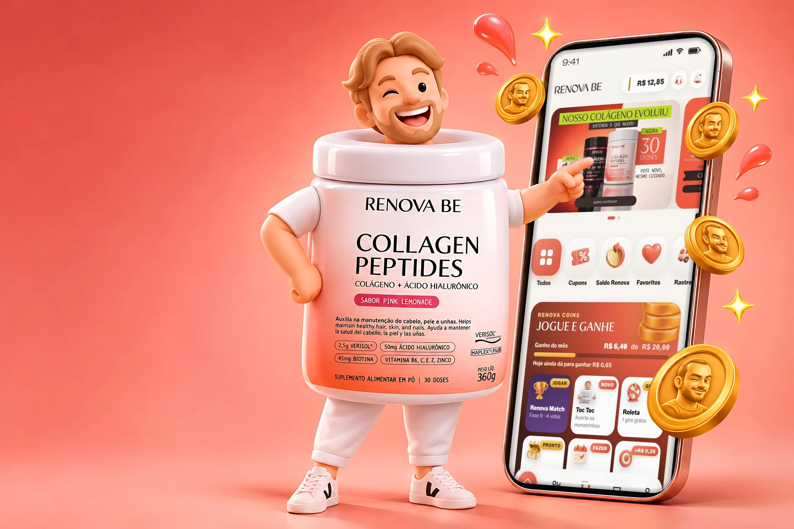
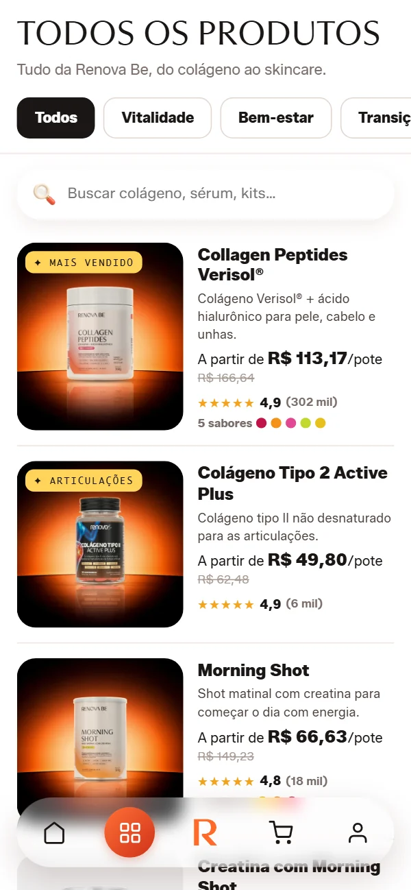
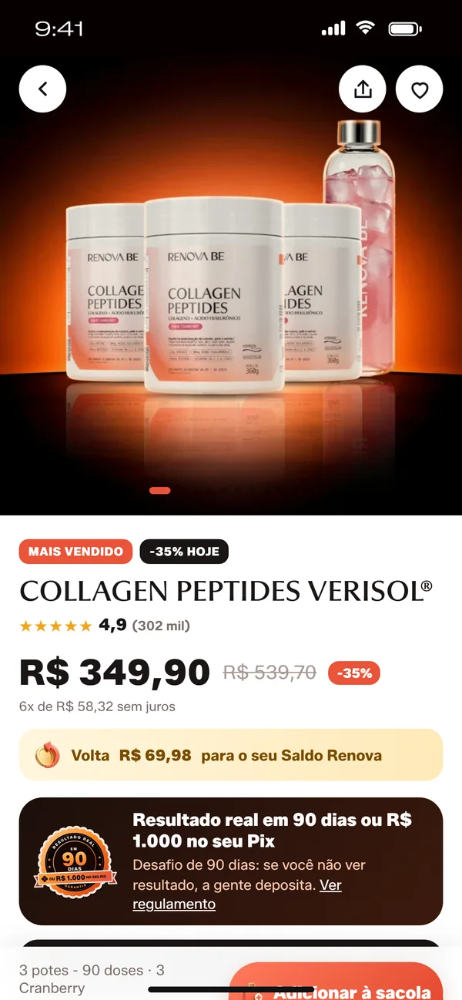
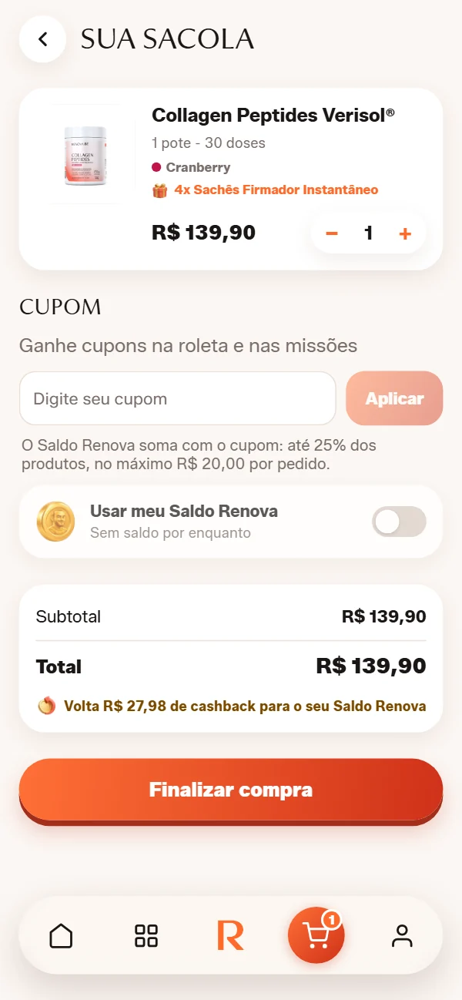
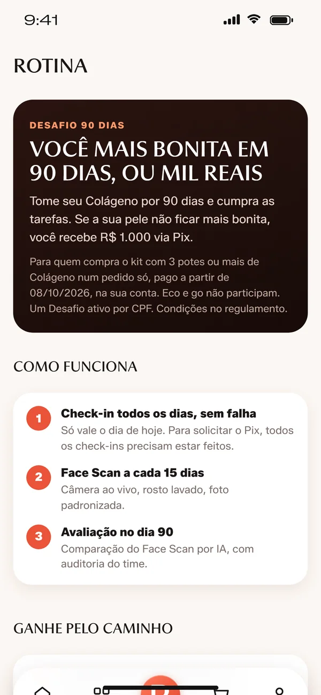
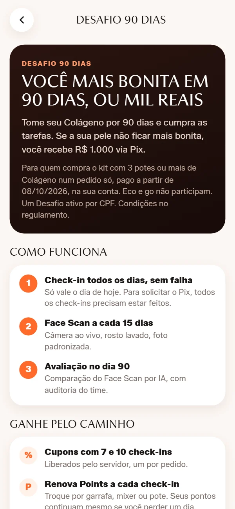
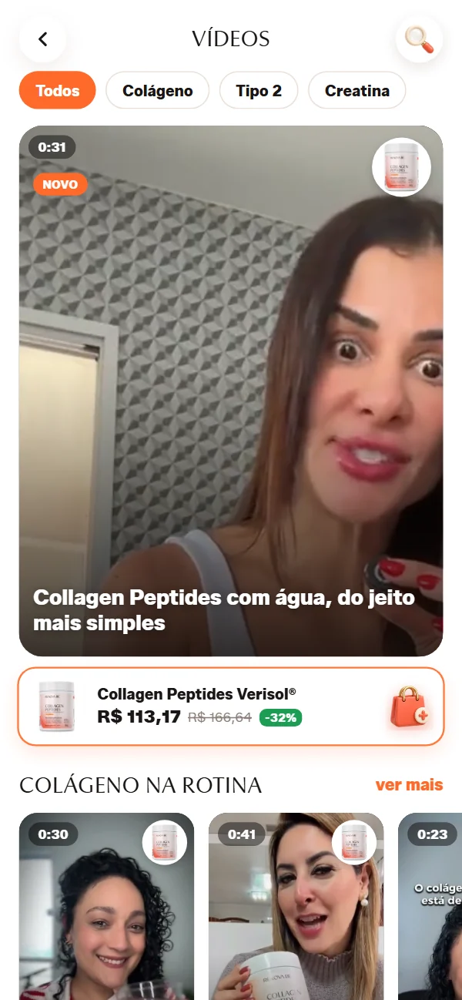
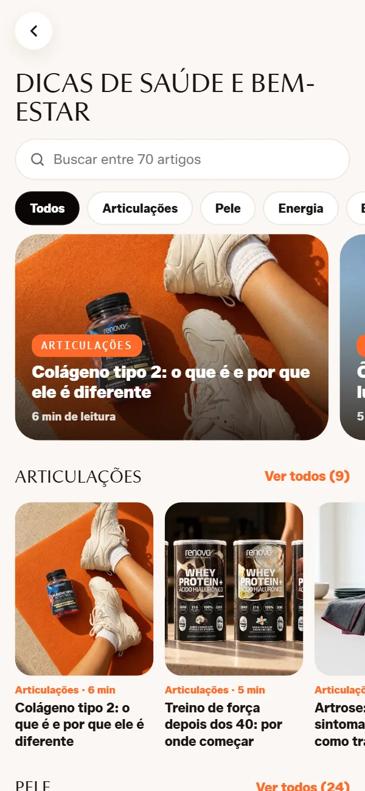
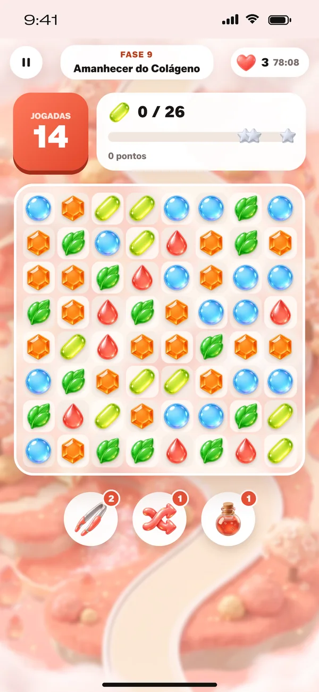
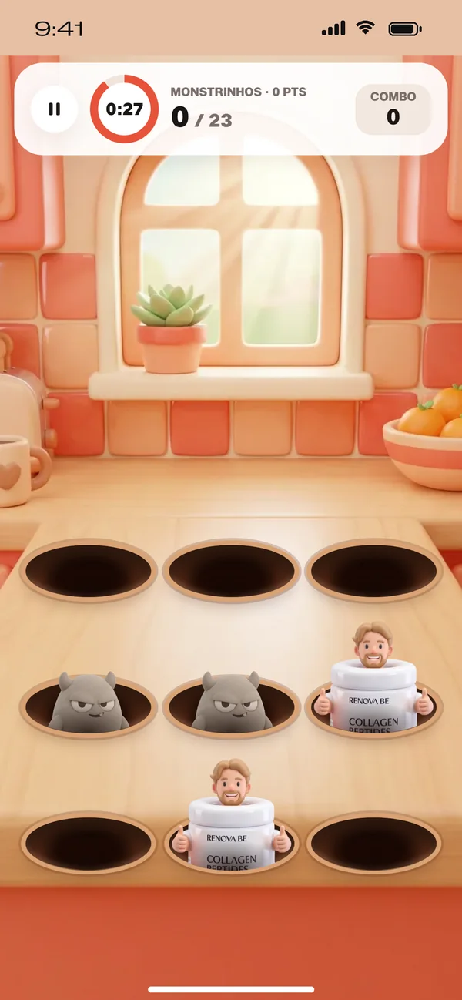

App
Renova Be
Loja, rotina de tratamento, conteúdo e recompensa num app de autocuidado.
O case em
7 pontos.
App da Renova Be, marca de colágeno e skincare, no iOS e no Android. O app tinha loja, sacola e conta iguais às do site.
O app era um espelho do site: nada para fazer nele sem intenção de compra.
Dar um motivo para abrir o app todo dia, sem atrapalhar a compra.
Protótipo navegável no lugar de telas soltas, a partir do Figma, com as regras e os textos do app.
Loja mais curta, rotina de tratamento de 90 dias, vídeos e artigos que levam ao produto, e uma área Ganhe com saldo em reais e dois jogos.
Teste com 4 mulheres e 3 tarefas: jogar, marcar a dose e escolher o kit. Todas concluíram, mas nenhuma entendeu o que ganha nos jogos.
O redesenho entrou na versão 4.0 do app, publicada em novembro de 2026. O próximo passo é deixar claro o que a cliente ganha.
O app era um
espelho do site.
Loja, sacola e conta, como no site. O pedido foi direto: o app tem outra dinâmica e não pode ser uma cópia do site.
Redesenhei para dar um motivo de abrir todo dia, sem atrapalhar a compra: uma loja mais curta, uma moeda em reais e dois jogos com a cara da marca.
- Loja, sacola e conta, as mesmas telas do site
- As mesmas promoções do site, sem nada exclusivo
- Nenhum motivo para abrir sem intenção de compra
- Uma rotina diária ligada ao tratamento
- Recompensa com valor real, que chega ao checkout
- Algo leve para fazer em um minuto, todo dia
Protótipo no
lugar de tela.
Em vez de entregar só telas, entreguei um protótipo navegável no celular. O time implementou a partir dele.
O protótipo foi construído com o Claude Code em React, a partir das telas do Figma: as regras da rotina, o carrinho que leva à loja de verdade e cada fase dos jogos. As artes do jogo saíram do ChatGPT e os fundos animados dos mapas do Google Flow, sempre a partir de uma referência aprovada.
O case também está no Behance
A decisão mais importante foi o que não virou jogo.
Tratamento é sério.
Ganhe é leve.
O registro diário da dose é a prova da garantia. Se rendesse moeda, o app incentivaria registrar sem tomar.
Por isso o app tem duas áreas que não se misturam.
- SérioTratamentoRotina, trilha de 90 dias que nunca zera, desafio e face scan.
- LeveGanhePara todas as clientes: jogos, roleta, baú e missões.
- RegraUma não paga a outraRegistrar a dose nunca rende moeda.
Uma loja mais curta
que a do site.
A Início abre com as ofertas do dia e atalhos para o que a cliente mais procura. A lista de produtos mostra preço por pote, nota e avaliações, sem precisar entrar em cada um.
Na página do produto, o cashback e a garantia de 90 dias aparecem antes do botão. Na sacola ficam kit, sabor, brinde, cupom e saldo, tudo numa tela.
O kit maior mostra quanto sai cada pote, que é a conta que a cliente faz.
Resultado em 90 dias ou R$ 1.000 no Pix, perto do botão de compra.
O saldo e o cupom somam no mesmo pedido.




A rotina que
prova a garantia.
A cliente marca a dose do dia e acompanha a trilha de 90 dias, que nunca zera: um dia esquecido não apaga o caminho.
Quem entra no Desafio de 90 dias registra a dose e faz o face scan a cada 15 dias. É essa rotina que sustenta a garantia de resultado.




Vídeos e artigos
que levam ao produto.
Vídeos curtos de clientes e artigos sobre pele, articulações e energia. Cada um recomenda o produto do seu tema, no meio e no fim.


Uma moeda que vale
dinheiro de verdade.
Pontos abstratos viraram Renova Coins em reais, com validade e um limite de uso por pedido. O desconto chega de verdade ao checkout e soma com o cupom.

Dois jogos curtos,
com a cara da marca.
Renova Match: um jogo de combinar em que as peças são os ativos dos produtos, e cada chefão é uma dor que o produto combate. Toc Toc: 30 segundos para martelar as dores sem acertar o pote.
Os jogos ficam na área Ganhe e rendem saldo para usar na loja. A rotina do tratamento nunca rende moeda.




Use o app
aqui mesmo.
É o mesmo protótipo que as usuárias testaram. Jogue uma fase, marque a dose do dia ou monte um kit até o botão de pagar.
Nada é comprado: o botão de finalizar leva para a loja e para aí.
Quatro mulheres,
três tarefas.
Pedi para 4 mulheres de 27 a 61 anos, que tomam ou já tomaram suplemento, usarem o protótipo sozinhas no próprio celular. Nenhuma era cliente da marca. Elas tentaram jogar uma fase, marcar a dose do dia e escolher colágeno para 3 meses até o botão de pagar, e deram uma nota de 1 (muito difícil) a 7 (muito fácil) para cada tarefa.
Todas concluíram as três tarefas. As duas mais velhas concluíram com dificuldade.
Todas ficaram em dúvida sobre a recompensa. “A expressão ganhar dinheiro me fez pensar que poderia receber um valor na minha conta.” (61 anos)
A rotina foi a tarefa mais fácil, mas faltou o aviso. Duas procuraram a rotina dentro da página do produto.
Todas escolheram o kit de 3 potes, mas queriam o preço por pote e a economia lado a lado, e saber se o brinde já está incluído.
“Não entendi se é possível receber dinheiro de verdade.”
No ar, e o que
muda a partir daqui.
O redesenho entrou na versão 4.0 do app, publicada na App Store e no Google Play em novembro de 2026, com os dois jogos e o Saldo Renova no checkout.
Os ajustes abaixo seguem o que travou mais de uma pessoa no teste. Depois, testo de novo as mesmas tarefas.
Acessibilidade (WCAG AA), medida no protótipo com um script de contraste e de área de toque: